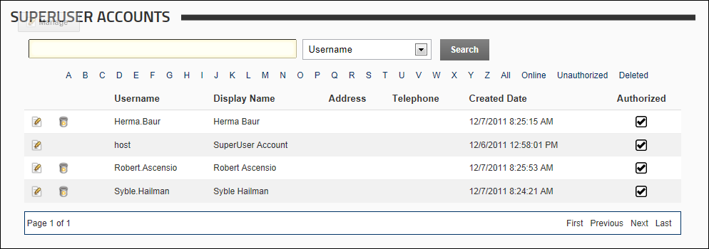

The SuperUser Accounts module enables the creation and management of SuperUser accounts. SuperUsers are able to manage all sites and host settings. This Host only module is displayed on the Host > Advanced Settings >  SuperUser Accounts page. SuperUsers can modify the columns that display on the SuperUser Accounts module and add new profile properties.
SuperUser Accounts page. SuperUsers can modify the columns that display on the SuperUser Accounts module and add new profile properties.

The SuperUser Accounts Module